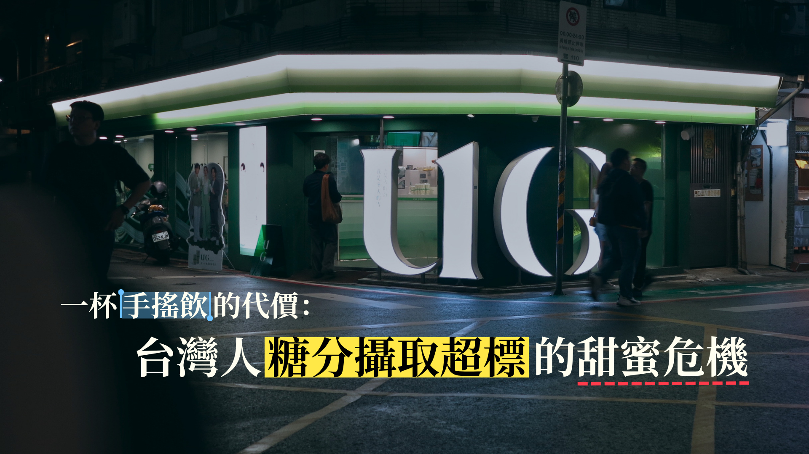
究竟台灣人有多愛喝手搖？
「幾乎走兩步就是一家飲料店，無論是下班時間還是中午休息，隨時隨地都能叫到飲料，這已經變成國人生活中的一種習慣。」，立法委員郭昱晴曾經參與無糖飲料貨物稅減免倡議，她精準地評價台灣人的飲用習慣。
曾在多家連鎖手搖飲店任職的店員Ryan（化名）表示：「生意好的時候，一家店一天就能賣出三、四百杯，大家對手搖飲的依賴真的很高。」
根據財政部最新統計，台灣手搖飲產業年營業額已突破新台幣560億元，展現驚人的消費動能。截至民國114年，全台手搖飲店家數更超過1萬6千家，數量不僅逐年攀升，更已正式超越四大超商的門市總數。
喝進身體的手搖飲量更是驚人。114年全台手搖飲店總營業額約為604億元（60,435,646,000元），若以一杯手搖飲50元估計，台灣一年就賣出超過12億杯手搖飲。
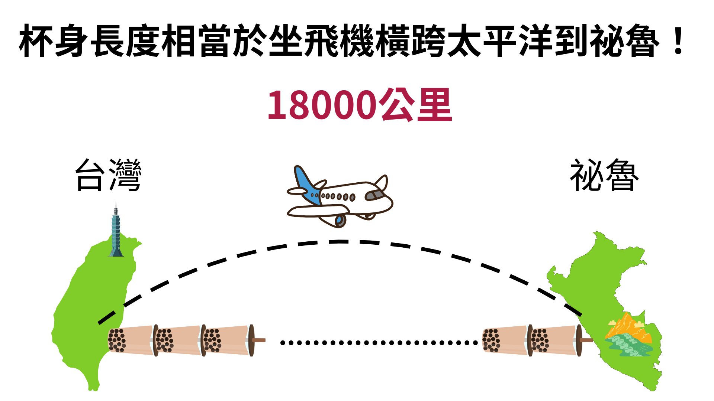
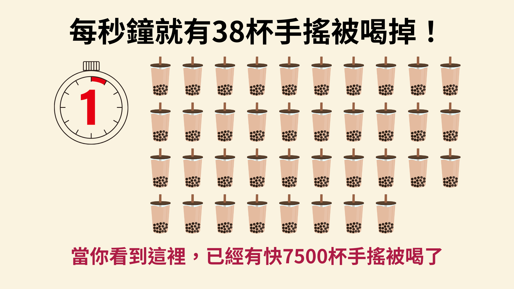
一杯又一杯的手搖飲，是獎勵慰藉也是集體制約
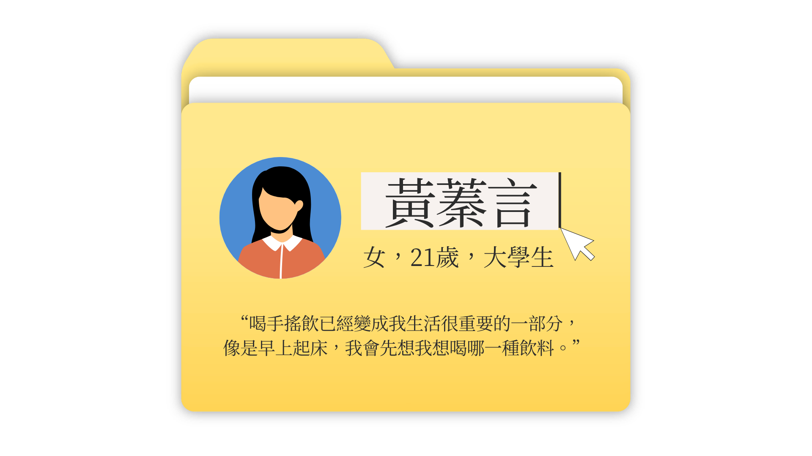
「喝手搖飲已經變成我生活很重要的一部分，常常早上起床，我就會先想今天要喝哪一種飲料。」
對黃蓁言而言，手搖飲早已是一種日常儀式。而校園周邊飲料店林立，「我想喝，隨時都能夠喝得到，這也讓我更容易養成習慣。」
隨著升上大二後課業壓力增加，她喝的頻率也從每週兩杯，逐漸增加到每天一至兩杯。每當完成一件困難的事，她便會買杯飲料獎勵自己，此外心情低落時，手搖飲也像是一種安慰。
「它好像在告訴我，我今天已經做得很好，不用再對自己要求那麼高。」
久而久之，飲料不只是滿足口腹之慾，更承載著她的情緒。
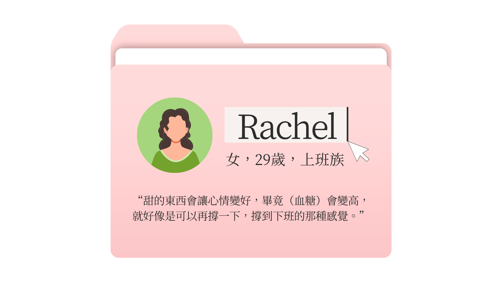
而對Rachel（化名）來說，飲料則是一杯幫助自己撐過工作的「續命水」。
一年前轉職到電商產業後，她每天面對接連的業績壓力。當時，同事幾乎天天揪團訂飲料，她不好意思拒絕，便跟著一起點，最後喝手搖也成了工作中的固定儀式。
「如果同事沒有揪，我就不會喝，但因為大家壓力都很大，所以每天都在點。」
每當她工作做到一半開始拖延、提不起勁，喝完飲料後，像重新獲得動力，「會覺得算了，趕快把事情做完好了。」
短暫的快樂，如何透過大腦獎勵機制變成下一杯？
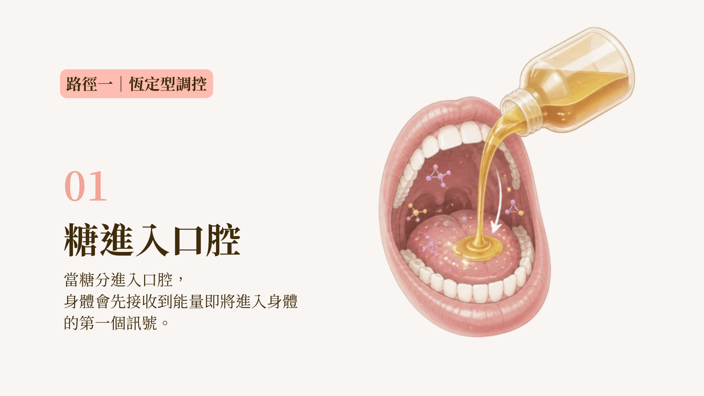
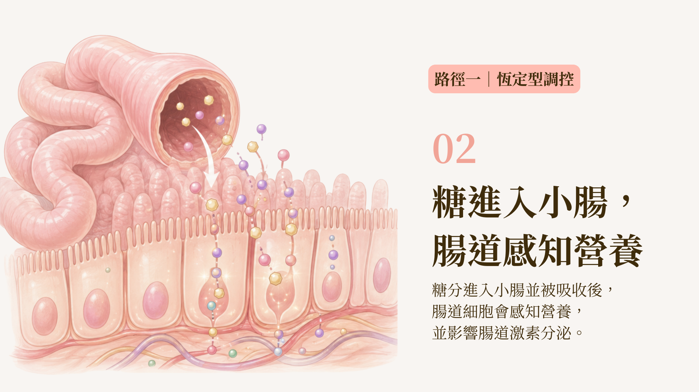
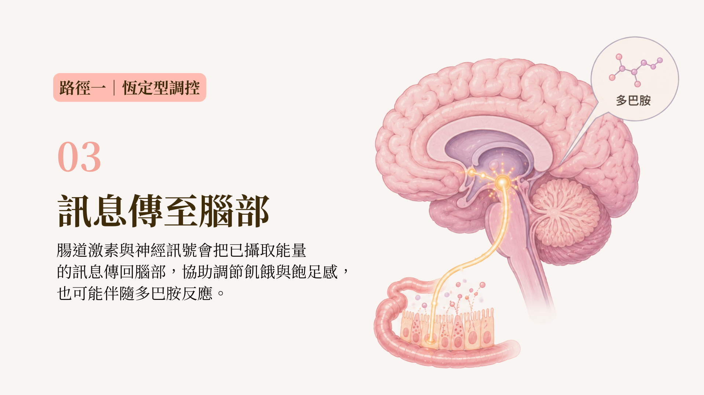
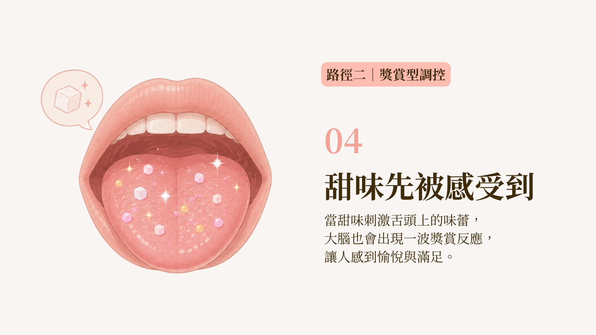
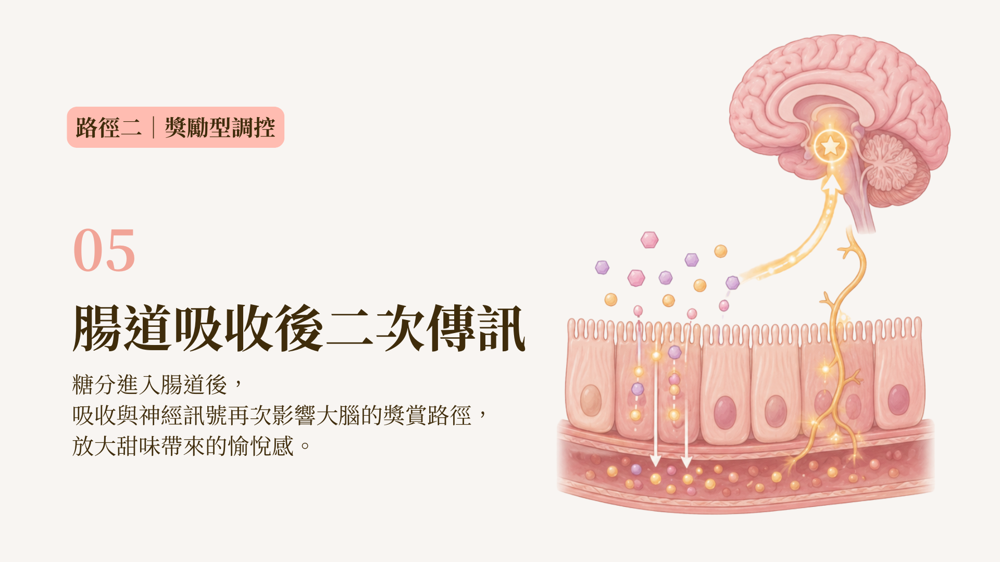
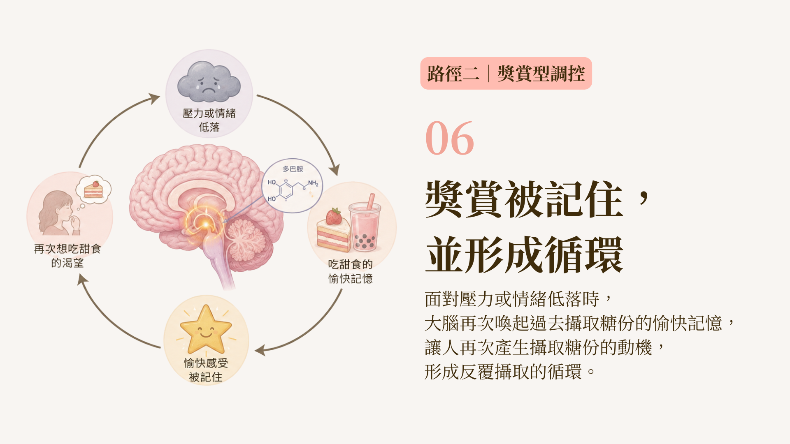
為什麼一杯甜甜的手搖飲真的能讓人感覺好一些？
高雄醫學大學公共衛生學系教授李建宏指出，糖分進入人體後，會透過兩套機制產生讓大腦產生回饋。
第一套是身體的能量調節機制。糖進入腸道並被吸收後，會影響腸道激素分泌，再透過神經訊號將「已經攝取能量」的訊息傳回大腦，協助身體調節飢餓與飽足感。
第二套則是大腦的獎賞機制。當甜味刺激舌頭上的味蕾，大腦會產生獎賞反應，使人感到愉悅，糖進入腸道後，也可能進一步影響大腦的獎賞路徑。
這兩套機制原本有助於人類辨認並攝取能量，但也會留下「這個味道帶來愉悅」的記憶。
日日營養營養師蔡佳穎說，當人在壓力狀態或情緒低落時，大腦可能重新喚起過去吃甜食後的愉快經驗，使人再次尋找甜味。
這表示大腦早已將特定的負面情緒，與攝取糖分後的愉悅經驗建立神經連結。即便身體的能量攝取已飽和，大腦仍會強烈渴望甜食。
這套機制也呼應了黃蓁言喝飲料時的感受。
她形容，喝下第一口後會感到滿足與快樂，「可能是感覺到多巴胺在釋放」。但這份快樂非常短暫，很快就會消失，只留下還想再喝的念頭。
短暫的快樂，如何透過大腦獎勵機制變成下一杯？
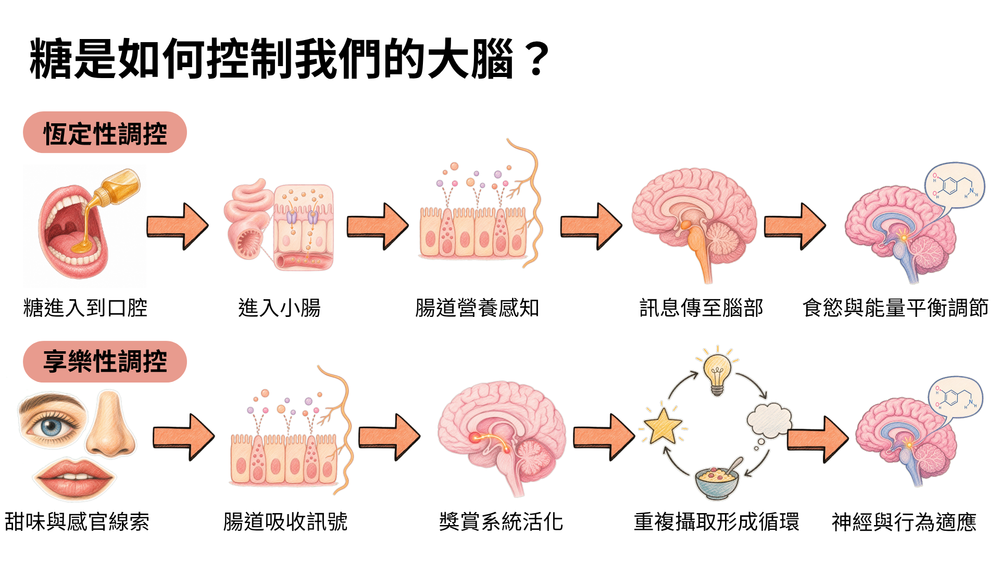
為什麼一杯甜甜的手搖飲真的能讓人感覺好一些？
高雄醫學大學公共衛生學系教授李建宏指出，糖分進入人體後，會透過兩套機制產生讓大腦產生回饋。
第一套是身體的能量調節機制。糖進入腸道並被吸收後，會影響腸道激素分泌，再透過神經訊號將「已經攝取能量」的訊息傳回大腦，協助身體調節飢餓與飽足感。
第二套則是大腦的獎賞機制。當甜味刺激舌頭上的味蕾，大腦會產生獎賞反應，使人感到愉悅，糖進入腸道後，也可能進一步影響大腦的獎賞路徑。
這兩套機制原本有助於人類辨認並攝取能量，但也會留下「這個味道帶來愉悅」的記憶。
日日營養營養師蔡佳穎說，當人在壓力狀態或情緒低落時，大腦可能重新喚起過去吃甜食後的愉快經驗，使人再次尋找甜味。
這表示大腦早已將特定的負面情緒，與攝取糖分後的愉悅經驗建立神經連結。即便身體的能量攝取已飽和，大腦仍會強烈渴望甜食。
這套機制也呼應了黃蓁言喝飲料時的感受。
她形容，喝下第一口後會感到滿足與快樂，「可能是感覺到多巴胺在釋放」。但這份快樂非常短暫，很快就會消失，只留下還想再喝的念頭。
不知不覺喝下的糖
但若長期刺激大腦獎賞系統，就容易形成惡性循環。李建宏指出，這種糖的獎勵機制循環雖然不等同於毒品成癮，但很可能會讓人在不知不覺中攝取過多糖分。
此外，相較於固體食物，手搖飲不需要咀嚼，飲用速度快，帶來的飽足感也通常較低。飲用者可能在短時間內喝下大量糖與熱量，卻不覺得自己吃了一份食物，正餐與其他點心的攝取量也未必因此減少。
日日營養營養師蔡佳穎指出，一杯飲料即使含有相當高的熱量，仍可能因為是液體而缺乏明顯飽足感，使人沒有意識到自己已經攝取大量糖分與熱量。
曾在連鎖手搖飲店工作兩年的Anson（化名），原本也很愛喝飲料，直到培訓時第一次看見果糖機實際加入糖漿的過程，才發現自己過去熟悉的甜度，背後是遠超過想像的糖量。
「第一次看到全糖的糖量真的很震撼，感覺根本是在喝糖水。」而這份工作經驗也改變了他的飲用習慣，如今即使只加一分糖，他還是會覺得太甜膩。
但對一般的消費者來說，即便能感覺到「全糖、半糖、微糖」的甜度差異，卻還是很難具體想像這些選項究竟分別代表多少糖。
一杯就過量！手搖飲的含糖量超乎想像
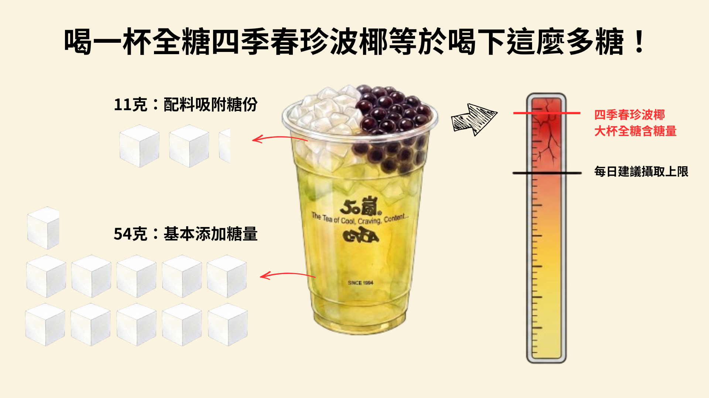
以50嵐的大杯四季春珍波椰為例，若按照受訪店員提供的操作方式推估，全糖飲料光是額外加入的糖漿便約有54克，珍珠、波霸與椰果在製作及浸泡過程中還會增加糖量，整杯可能達到約65克，超過成人每日50克的建議上限。
即使改點半糖，添加糖仍約有27克，微糖也可能含有約16.2克。換句話說，「微糖」只是相對全糖少，並不等於糖量很低。且若再加上蜜製珍珠、椰果或粉粿等配料，一杯飲料的總糖量還會繼續增加。
而這樣的高含糖量現象並不是特例。
統計全台八大連鎖手搖飲品牌各自熱賣前五名品項，共40款熱門飲品，其中果茶與調味茶類占35%，奶茶、鮮奶拿鐵等奶類飲品占30%，加入珍珠、粉粿等配料的特調飲品占17.5%，其餘則為原茶類。
如果把甜度拉回多數品牌標示的全糖或正常甜，糖量更值得注意。除了四季春珍波椰之外，不少果茶、奶類飲品與加料飲品，單杯含糖量都超過50克。
值得注意的是果茶與調味茶。相較於奶茶或加料飲品，名稱中帶有「水果」與「茶」，往往更容易讓人產生清爽、負擔較低的印象。
但一杯果茶的甜味來源，不一定只來自水果本身，果醬、濃縮糖漿與額外添加糖加總之後，實際喝進去的糖，可能遠比消費者想像得更多。
從工作揪團、心情低落時想喝點甜的，背後牽動大腦對甜味的生理獎賞。當這些因素疊在一起，高糖飲料也更容易從偶爾享受，變成長期習慣。
甜口的代價：一杯杯糖如何累積成健康風險？
當糖分日復一日進入體內，最先承受衝擊的就是肝臟，從脂肪肝、高三酸甘油酯到前糖尿病階段，這些變化往往在健檢數字亮起紅燈前，就已經在體內發生。
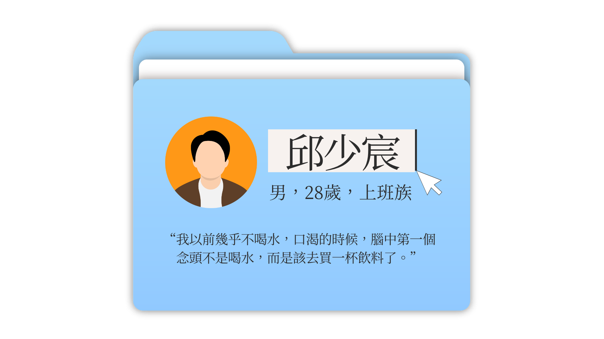
「我以前幾乎不喝水，口渴的時候，腦中第一個念頭不是喝水，而是好像該再去買一杯飲料了。」
在基隆長大的邱少宸，從小就不愛喝水。他說，基隆的水總帶著一股揮之不去的土味；後來到新竹和台北求學，自來水裡的消毒水味也讓他難以接受。於是在經歷重考與轉學的大學七年間，他幾乎每天都會喝一至兩杯手搖飲，甜度通常從半糖起跳。
早餐配一杯鮮奶綠加珍珠、椰果，下午再喝一杯全糖鮮橙綠，成為他再熟悉不過的日常。熬夜趕報告時要來一杯，心情低落時要來一杯，甚至和另一半吵架後，也會特地跑到較遠的店家購買自己最喜歡的品項。
「喝第一口的時候，真的有一種活過來的感覺。」他回憶，冰涼與甜味進入口中的瞬間，整個人彷彿立刻被喚醒。
但健康風險並不會隨著這一口甜味立即出現。那些每天喝下的糖，究竟如何影響身體健康？
高果糖糖漿如何增加肝臟負擔？
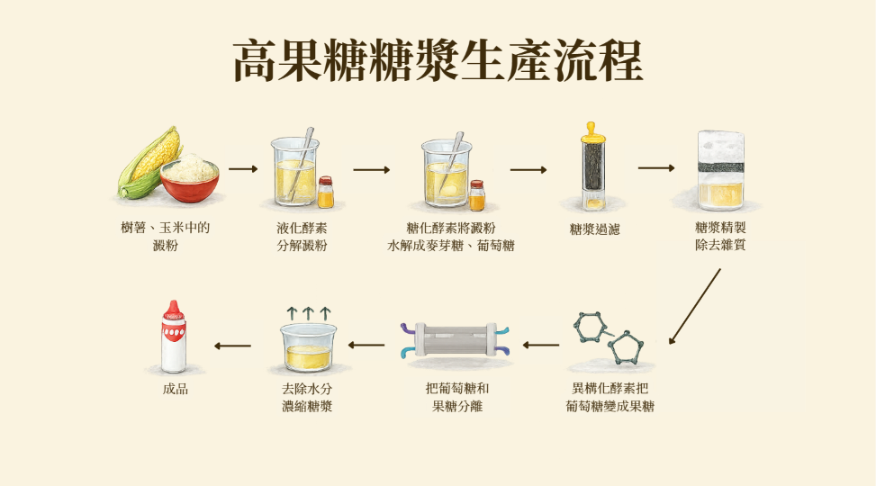
經常作為手搖飲甜味來源的高果糖糖漿，是引起健康隱憂的開端。
好食課執行長、營養師林世航表示，高果糖糖漿價格較低，本身又是液態，不必額外熬煮便能加入飲料，因此成為飲料業常見的甜味來源之一。
以飲料業常見的HFS 55為例，主要成分約為55%的果糖與42%的葡萄糖。兩者都能提供熱量，但在人體內的代謝方式並不完全相同：葡萄糖可供全身細胞利用，並刺激胰島素分泌，果糖則主要由肝臟代謝。
當果糖攝取量超出身體所需，且整體熱量長期過剩時，肝臟可能將其中一部分轉化為脂肪。
從脂肪堆積到代謝異常
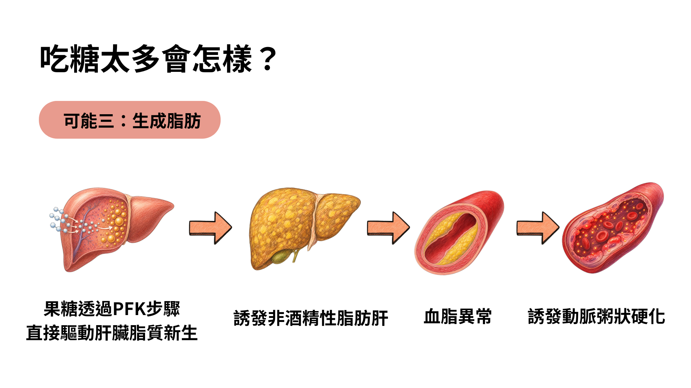
因此長期過量攝取手搖飲可能使脂肪堆積在肝臟，並提高血液中的三酸甘油酯。
這些改變通常不會在喝完一杯飲料後立即被察覺。邱少宸也是到了多年後，才逐漸看見身體和生活的變化。
大學入學時，他的體重約為66公斤；畢業時，體重已增加至77公斤。更讓他震驚的是，手搖飲也在不知不覺間累積成一筆不小的開銷。
「我有一天突然算了一下，才發現自己一個月竟然花了四、五千塊在手搖飲上。」
荷包與體重的雙重警訊，讓他第一次認真思考，自己是不是已經太依賴手搖飲。
過去喝飲料時，他不會查看熱量，也沒有特別思考健康影響，直到多年累積的變化逐漸可以被看見，才下定決心開始減糖。
日日營養
營養師
蔡佳穎
邱少宸的經驗發生在台灣成人過重與肥胖比例逐漸上升的背景下。
國民健康署調查顯示，台灣18歲以上人口的過重與肥胖率，從民國102至105年的44.7%，上升至民國109至113年的51.3%，代表目前超過一半的成年人有過重或肥胖問題。
如果觀察性別差異，可以發現男性的過重與肥胖情況比女性更明顯。
近十年內，男性過重與肥胖率從51.9%上升至61.2%；女性則從37.5%上升至41.5%。顯示肥胖不只是個人生活習慣問題，而是逐漸成為全民健康議題。
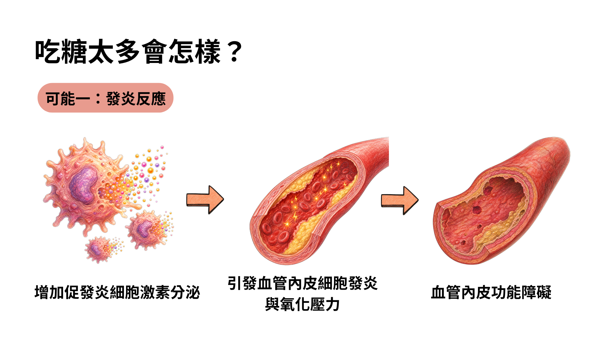
當脂肪細胞持續膨脹，甚至超出原本可以負荷的程度，身體可能啟動免疫反應，釋放發炎物質。
這種長期、低度的發炎可能使血管內皮與代謝功能受到影響，也會讓細胞對胰島素的反應逐漸變差，形成「胰島素阻抗」。
糖尿病學會
秘書長
嚴愛文
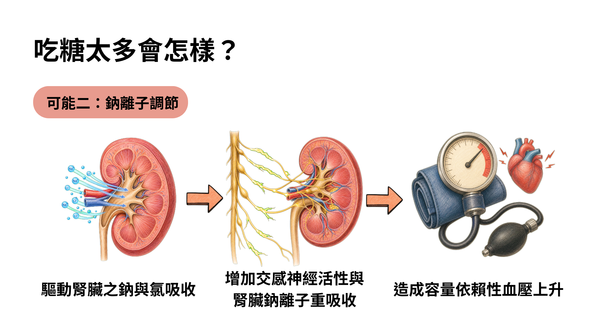
此外，過量糖分也可能間接影響血壓調節。當腎臟保留較多鈉與水分，血液量可能增加，交感神經活性與體重上升，也可能進一步增加血壓負擔。
意即高血壓不只與鹽分有關，長期高糖、高熱量飲食所引發的代謝變化，也可能成為其中一項風險因素。
成大醫院
防治中心主任
歐弘毅
胰島素長期「加班」，糖尿病便可能出現
為了把血糖控制在正常範圍，身體只好不斷加碼，分泌比過去更多的胰島素。
歐弘毅用「過勞」形容這段過程。即使血糖看似還維持正常，背後其實可能是胰臟在勉強撐住局面。
他進一步解釋：「如果長期處在超負荷下，胰島細胞再也撐不住了，原本勉強維持的平衡就可能開始鬆動，血糖一路往上，糖尿病就跑出來了。」
麻煩的是，這些生理變化並不一定會立即被察覺。
現年59歲、長期執業於魚丸加工業的阿海師（化名），因工作環境炎熱，會想喝冰涼、有甜味的飲品，他曾喝自煮甜茶，後來也會叫手搖飲。
阿海師約在45歲時確診糖尿病，但剛得知罹病時，並未立刻改變原有的飲食習慣。
「那時候還年輕，也沒有想那麼多，照樣喝飲料，還是喝比較甜的。」
歐弘毅指出，不少人在糖尿病前期，胰島素調節其實已經出現異常，血糖也可能長時間處在偏高、反覆波動的狀態，但日常生活中未必有明顯不舒服。
沒有疼痛，也不一定有足以讓人警覺的症狀，因此很容易一路拖著，直到健檢數字異常，甚至出現併發症，才發現問題早已存在一段時間。
而高血糖真正令人擔心的，也不只是報告上的一個紅字。血糖長期偏高，可能持續傷害血管與器官，心血管疾病、腎臟病、視網膜病變等風險也隨之增加。
除此之外，第二型糖尿病也不只發生於中高齡族群。歐弘毅表示，根據健保資料，近年40歲以下的年輕糖尿病患者有所增加。相較於年長後才發病，年輕患者需要與疾病共處的時間更長，也可能更早面臨相關併發症。
衛福部統計顯示，民國97年至113年間，台灣糖尿病死亡人數整體增加，並在民國111年超過1萬2千人。即使後續略有下降，死亡規模仍高於十多年前。
當糖分造成的健康風險悄悄逼近，如何讓減糖成為下一步需要面對的公共政策問題。
如何幫助台灣人「減糖」？
但究竟該如何從根源改變台灣人愛喝高糖手搖飲的飲食習慣？答案可能比想像中更複雜。
從飲料杯上的熱量標示、新聞媒體的健康報導，到學校與醫院的衛教宣導，多數台灣人都聽過「少糖比較健康」這句話，也知道喝太多手搖飲可能會對身體不太好。然而，知道與做到之間，卻存在一道難以跨越的鴻溝。
根據台灣健康聯盟2025年「食安五環2.0政策暨減糖新生活」網路問卷，在來自全台22縣市的1,113名成年受訪者中，92.3%認為含糖飲料對健康「有點危害」或「非常危害」；約66%購買飲料時會注意熱量標示，另有66.5%知道世界衛生組織建議每日添加糖攝取量不應超過總熱量的10%。
問卷中的認知並未完全反映在飲用行為上。近四成受訪者每週飲用三次以上含糖飲料；57.2%購買含糖飲料時偏好手搖飲。在手搖飲甜度選擇上，28.2%習慣選擇半糖或更高甜度。
認知與行為之間的落差，也出現在黃蓁言的生活中。她知道手搖飲不健康，也注意到飲料杯上印有熱量與糖量，卻從來不會主動查看。
「我都已經決定要喝了，知道它不健康也還是會喝，所以覺得沒有看的必要。」她坦言，如果真的在意那些數字，自己可能一開始就不會購買。
這種選擇並不單純源於資訊不足。當人已經把飲料視為獎勵、安慰或工作中的支撐，健康標示反而可能帶來罪惡感，使人選擇略過資訊，以保留當下的滿足。
手搖飲店員也經常看見類似情況。曾在飲料店工作約半年的Leo（化名）回憶，一名常客每天固定購買「雙倍全糖珍珠奶茶」。他曾提醒對方減少糖量，卻引起對方不滿。
在店內親眼看見配料製作過程後，Leo也改變了自己的飲用習慣。「珍珠在煮的時候要加很多糖去炒，煮完又泡在糖漿裡。這讓我現在喝飲料時會擔心健康。」但他觀察，多數消費者購買飲料時，仍很少查看店內的熱量或糖量標示。
這些經驗顯示，提供資訊雖然重要，卻未必足以改變選擇。手搖飲容易取得、價格相對低廉，又與情緒、社交和工作文化緊密相連，使「少喝一點」遠比想像中困難。
減糖只是個人的責任嗎？
當高糖飲食增加肥胖、糖尿病與心血管疾病風險，問題便不再只涉及個人口味，也可能轉化為醫療與公共衛生負擔。
台灣健康聯盟
理事長
吳玉琴
台灣健康聯盟的問卷也調查了價格對購買意願的影響。當含糖飲料價格提高5至10元時，83.6%的受訪者表示「一定會」或「可能會」減少購買；若購買無糖飲料可以獲得折扣，則有89.2%表示願意改買無糖飲品。超過一半的受訪者認為，優惠3至5元便可能提高自己選擇無糖的意願。
近年已有不同國家採取含糖飲料稅。英國與泰國依產品含糖量分級課稅，促使業者為了降低稅負而調整配方；墨西哥採取固定稅額，新加坡則透過飲料健康分級與廣告限制，降低高糖飲品的市場吸引力。
這些制度的目的不只是讓消費者少買，也包括促使業者主動降低產品含糖量。相較於要求每個人在購買時抵抗誘惑，改變市場上的產品配方，可能影響更廣泛的消費者。
漲價與折扣，哪一種比較能改變選擇？
台灣健康聯盟的問卷也調查了價格對購買意願的影響。當含糖飲料價格提高5至10元時，83.6%的受訪者表示「一定會」或「可能會」減少購買；若購買無糖飲料可以獲得折扣，則有89.2%表示願意改買無糖飲品。超過一半的受訪者認為，優惠3至5元便可能提高自己選擇無糖的意願。
好食課執行長
營養師
林世航
台灣為何沒有直接對手搖飲課徵糖稅？
相較於部分國家直接對含糖飲料課稅，台灣目前採取的方向較為溫和，先從包裝無糖飲料免徵貨物稅著手，希望透過價格誘因，引導消費者選擇無糖產品。
立法委員郭昱晴認為，與其立即對含糖飲料加稅，先從無糖飲品免稅開始，民眾的心理抗拒可能較低。
然而，免稅不一定會完整反映在售價上。吳玉琴指出，免除的稅額能否轉化為消費端實際可感受的降價，仍有待觀察。如果一瓶飲料只便宜數元，價格差距可能不足以改變既有習慣。
更大的問題是，現行免稅措施主要適用於符合條件的包裝飲料，難以直接涵蓋高度客製化的手搖飲。
瓶裝飲料具有標準化配方與生產線，但手搖飲可以調整甜度、冰量及配料，不同品牌甚至不同門市的操作方式也可能有所差異。即使茶湯本身沒有額外加糖，珍珠、芋圓、椰果與粉粿等配料，也可能在製作或浸泡過程中吸附糖分。
台灣健康聯盟
理事長
吳玉琴
如果依照每杯實際含糖量課稅，政府必須面對配方不一、現場製作與稽查成本等問題；若只針對連鎖店，又可能產生連鎖與非連鎖業者之間的公平性爭議。這也是糖稅難以直接套用到台灣手搖飲市場的重要原因。
在糖稅之前，先讓無糖更容易
手搖飲短期內難以直接納入課稅，並不意味著減糖政策只能停在健康宣導。相較於一再提醒民眾少喝糖，現階段更實際的做法，是先從每天做選擇時真正看得到、感受得到的地方著手。
例如，統一甜度與糖量標示、進一步揭露珍珠、粉粿等配料的含糖量，或鼓勵手搖飲業者提供無糖飲品折扣，都比要求政府逐杯檢驗更容易執行，行政成本也相對較低。對消費者而言，當不同品項的糖量能被清楚比較，選擇低糖或無糖時，也就不再只能憑感覺判斷。
吳玉琴便提出，可以借鏡自備環保杯折價的做法，把價格誘因帶進減糖政策。「如果無糖減5塊、10塊，民眾選擇無糖的意願就會提高。」她認為，讓無糖飲品在價格上更有吸引力，是手搖飲政策值得持續推動的方向。
只是，價格優惠並不是唯一答案。奶茶、果茶或加料飲品即使選擇不額外加糖，原料本身仍可能含有糖分。減糖政策不能只把焦點放在「全糖、半糖、無糖」這類甜度選項，還需要同時處理標示方式、配料糖分與業者配方，避免「無糖」成為另一種讓消費者放鬆警覺的名稱。
這也回到手搖飲真正難以改變的地方。從黃蓁言把一杯飲料當成日常獎勵，到邱少宸多年後才慢慢察覺體重與支出的變化，這些經驗都提醒我們，手搖飲並不是一項只靠意志力就能輕易戒掉的甜食。它早已進入工作的休息節奏、朋友之間的社交，以及人們犒賞自己的方式。
如果要讓台灣人真正減少糖分攝取，就不能只是反覆告訴大家「糖對身體不好」，也不能把所有責任都推回個人的自制力。真正需要改變的，是人們每天面對的選擇環境：讓糖量更容易理解、讓低糖產品更容易取得，也讓無糖成為價格上更有吸引力的選項。
當健康的選項變得更清楚、更方便，甚至更划算，少喝一杯、少加一分糖，才有機會從一句健康口號，慢慢變成能夠維持的生活習慣。